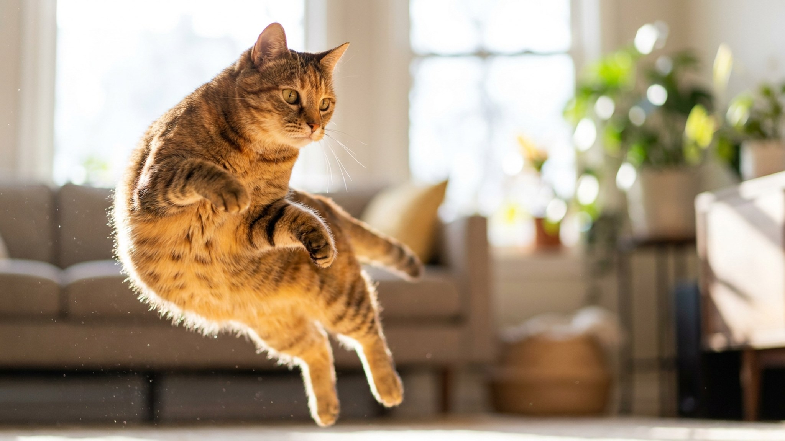

Сняли свитер, бросили на стул — через минуту на нём уже лежит кошка, свернувшись в клубок. Достали чемодан, разложили чистое бельё — она тут же занимает место. Это не каприз и не «метит назло». За привычкой спать на вещах хозяина стоит несколько понятных причин — и одна из них помогает кошке мягче пережить ваш отъезд.
🐾 У вашей кошки так же?
Расскажите в AnimaLife, как ведёт себя ваш питомец, — приложение объяснит причину и даст пошаговый план. Бесплатно, без записи к специалисту.
Разобрать свой случай → Разобрать в MAX →
У вас iPhone? AnimaLife есть в App Store
Обоняние для кошки главнее зрения. Ваша одежда пропитана личным запахом сильнее, чем любое место в доме, а этот запах кошка связывает с тем, кто её кормит, гладит и не представляет угрозы. Лечь на вещь хозяина — всё равно что оказаться рядом с вами, когда вас нет. Для кошки это способ успокоиться, а не «захватить трофей».
Кошки спят по 14–16 часов и выбирают, где потеплее и помягче. Комфортная температура для них выше человеческой, поэтому кошку так тянет к теплу. Ношеная одежда дольше держит тепло тела, а свитер или толстовка образуют удобное «гнездо» с бортиками, куда приятно свернуться. Стопка чистого белья из-под сушки тёплая и мягкая — с точки зрения кошки, идеальная лежанка появилась сама собой. Добавьте сюда инстинкт из котёнка: спать, прижавшись к тёплому и пахнущему «своим», — значит быть в безопасности.
Когда кошка трётся о вас или ложится на ваши вещи, она смешивает свой запах с вашим. В кошачьем мире это знак «мы одна группа», а не борьба за территорию. Так кошки помечают своих людей и предметы как часть общего безопасного пространства. По сути, лёжка на вашей футболке — тихое признание в привязанности.
Сама по себе привычка безобидна и даже полезна. Обратить внимание стоит, если поведение резко изменилось: кошка, которая была самостоятельной, вдруг не отходит от ваших вещей, стала беспокойной, много вокализирует или это совпало с другими переменами — в аппетите, туалете, активности. Отдельная история — когда кошка не просто лежит, а начинает сосать или жевать ткань: у части кошек это способ самоуспокоения, за которым стоит понаблюдать. Любые такие сдвиги — повод присмотреться внимательнее и при сомнениях обсудить со своим ветеринаром.
А привычку можно обратить на пользу: уезжая надолго, оставьте кошке ношеную футболку на лежанке. Знакомый запах снижает тревогу в разлуке лучше любой новой игрушки.
🐾 Хотите понять, что кошка говорит вам?
Опишите ситуацию или пришлите видео в AnimaLife — AI разберёт поведение вашего питомца и подскажет, что делать. Бесплатно, ответ за минуту.
Разобрать поведение → Разобрать в MAX →
У вас iPhone? AnimaLife есть в App Store
🐾 Понравился разбор?
Подпишитесь на канал — каждый день разбираем по одному тревожному симптому у кошек и собак: что в пределах нормы, а когда пора к врачу. Подпишитесь, чтобы не пропустить разбор, который может спасти здоровье вашего питомца.
Материал носит информационный характер и не заменяет очную консультацию ветеринара.